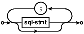
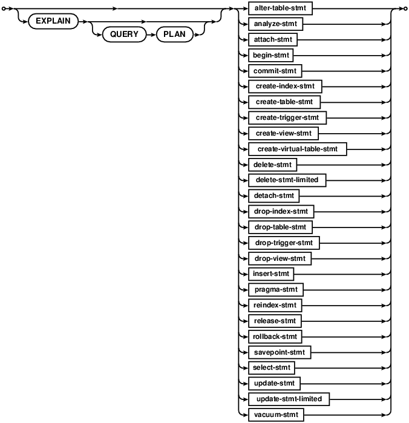

Choose any three.
|
|
SQLite里的SQL
SQL As Understood By SQLite
SQLite能够支持大部分的标准SQL语法，并且增加了少量独有的特性，不过与此同时也省略了一些特性。本文会准确的介绍SQLite支持哪些SQL语法，不支持哪些语法，并提供了一份SQL 关键词列表。使用了一个语法图来描述SQL语言的语法。
SQLite understands most of the standard SQL
language. But it does omit some features
while at the same time
adding a few features of its own. This document attempts to
describe precisely what parts of the SQL language SQLite does
and does not support. A list of SQL keywords is
also provided. The SQL language syntax is described by
syntax diagrams.
下面这些语法文档都是有效的。
The following syntax documentation topics are available:
函数sqlite3_prepare_v2()、 sqlite3_prepare()、
sqlite3_prepare16()、 sqlite3_prepare16_v2()、
sqlite3_exec(),和 sqlite3_get_table()接受一个用分号分割的SQL表达式列表(sql-stmt-list)。
The routines sqlite3_prepare_v2(), sqlite3_prepare(),
sqlite3_prepare16(), sqlite3_prepare16_v2(),
sqlite3_exec(), and sqlite3_get_table() accept
an SQL statement list (sql-stmt-list) which is a semicolon-separated
list of statements.

表达式列表中的每一个SQL表达式都是下面的一个实例：
Each SQL statement in the statement list is an instance of the
following:
